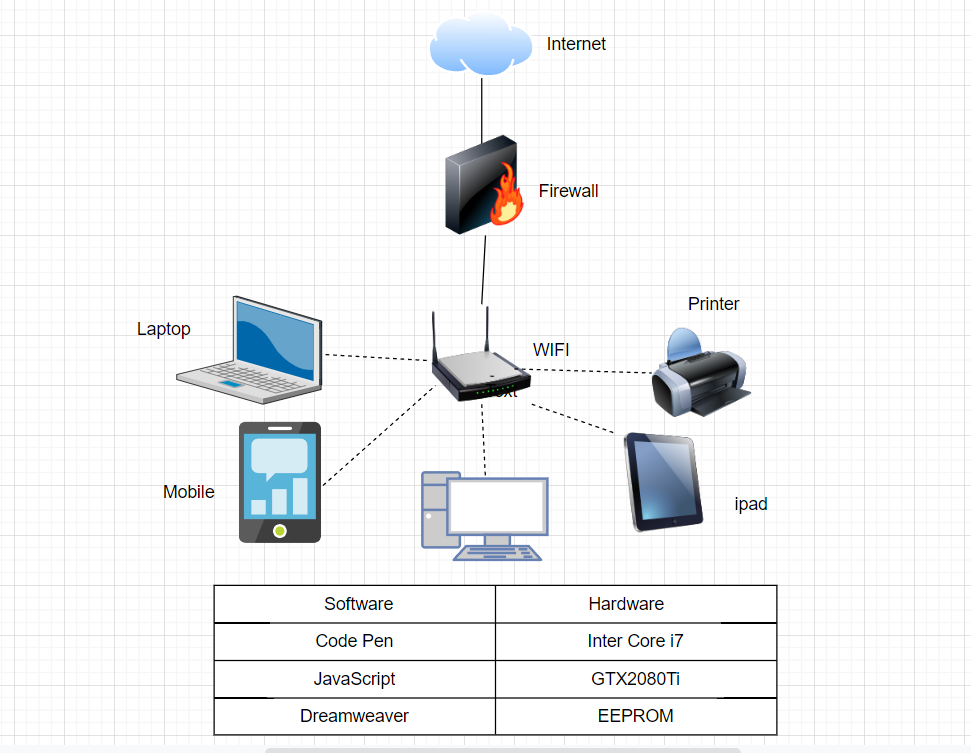
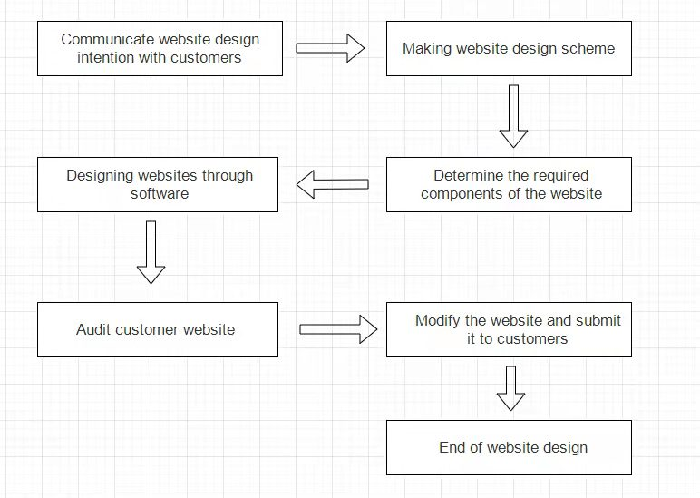

Advance：Gordon
IT Project
My IT project is web design, which is to meet the needs of many customers for web pages and complete various requirements of customers for web pages.
Sense of worth
In order to meet the business needs of our customers, we will get equal compensation for the completion of this project. We will also invest enough resources in this project to ensure that the project can be completed and that the value of the product meets the expectations.
Method
First, we will determine the components and elements needed to create this web page by understanding the needs of customers, and determine the purpose of this website. Then the basic scheme of designing the website is determined through the discussion between the teams, and then the preliminary web page is created through the use of relevant technical software and submitted to the customer for review. Finally, make the final modification to the website and submit it to the customer.
Questionnaire survey
| Name | Marco Xiang Enyu | Vivi Xu Weiwei |
|---|---|---|
| Name this system? | Personal Information Query | Personal Information database |
| What are the system objectives? | Show personal information to the company | Let the company know my personal information |
| List 3 essential system features and components? | Features:1.The system can store information. 2.The system can maintain web page running. 3.The system supports information modification.Components:1.Users 2.Cloud storage 3.Internet | Features:1.The system can prevent web crashes. 2.The system supports information modification. 3.The system can store data.Components:1.Users 2.Cloud storage 3.Internet |
| List 3 essential hardware from this system. | 1.CPU 2.GPU 3.Memory bank | 1.CPU 2.GPU 3.Laptop |
| List 3 essential software from this system. | 1.CodePen 2.JavaScript 3.Dreamweaver | 1.Eclipse 2.JDK 3.CodePen |
| List 2 external system components. | 1.PC 2.Laptop | 1.WIFI 2.Mobile |
| List 2 system benefits | 1.The system is convenient to query information. 2.The system can store information securely. | 1.The system can update user data in real time. 2.Users can obtain information in a timely manner. |
| List 2 project difficulties | 1.Project implementation takes a lot of time. 2.Potential holes in the project still need to be fixed. | 1.Staff implementing projects need to be ready to patch system vulnerabilities in real time. 2.There are still problems with the project's planning. |